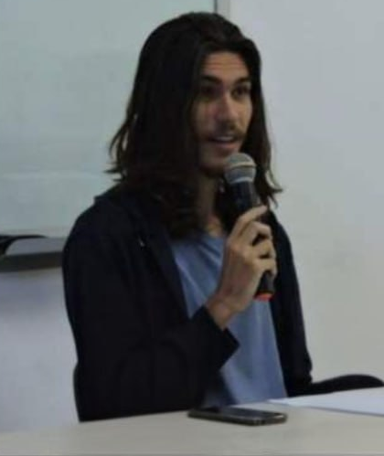

Manosphere and digital masculinities
Longitudinal study of masculinist communities, their repertoires, forms of belonging, criteria of authority, and discursive transformations.

SOCIOLOGY · DIGITAL METHODS · UFBA
MA student in Sociology · Digital Humanities researcher
01 — ABOUT
I am an MA student in Sociology at the Federal University of Bahia (UFBA), supervised by Professor Leonardo Fernandes Nascimento. My dissertation investigates the Brazilian manosphere through a longitudinal corpus of masculinist forums.
My trajectory brings together Social Sciences, Humanities, and digital methods. I work at UFBA’s Digital Humanities Laboratory (LABHDUFBA), with experience in corpus construction and preservation, textual and interaction-data analysis, visualization, and research infrastructure.
02 — RESEARCH
Longitudinal study of masculinist communities, their repertoires, forms of belonging, criteria of authority, and discursive transformations.
Research sobre ecossistemas digitais, extremismo, circulação de narrativas e os vínculos entre infraestrutura, mediação e vida pública.
Corpus construction, web scraping, computational text analysis, networks, visualization, and reproducible research practices.
03 — PROJECTS AND EXPERIENCE
2025 — present
MA dissertation on the Brazilian manosphere, combining sociological analysis, longitudinal corpus research, and computational methods.
2023 — 2024
Research sobre grupos de extrema-direita, dinâmicas de usuários, links multiplataforma e análise socioantropológica de ambientes digitais.
2024 — 2025
Work in Digital Humanities, research on health disinformation, and support for building tools, websites, and data workflows.
04 — PUBLICATIONS
A brief list based on the public Lattes CV, updated in August 2026.
MORAES, L. T. T.
NOTHAFT, R. J.; NASCIMENTO, L. F.; MORAES, L. T. T.; WEDDERBURN, R. S. M.
NASCIMENTO, L. F.; MOCELLIM, A. D.; MORAES, L. T. T.; BARRETO, T. B.
05 — METHODS AND TOOLS
R · text analysis · network analysis · web scraping · longitudinal data · visualization
Markdown · Quarto · Zotero · documentation · corpus preservation
Elasticsearch · Docker · HTML · Hugo · GitHub Pages · Visual Studio Code
Technical projects and materials: github.com/l-thibau ↗
06 — CONTACT
For academic contact, research opportunities, or presentation materials:
leonardo_thibau@hotmail.com